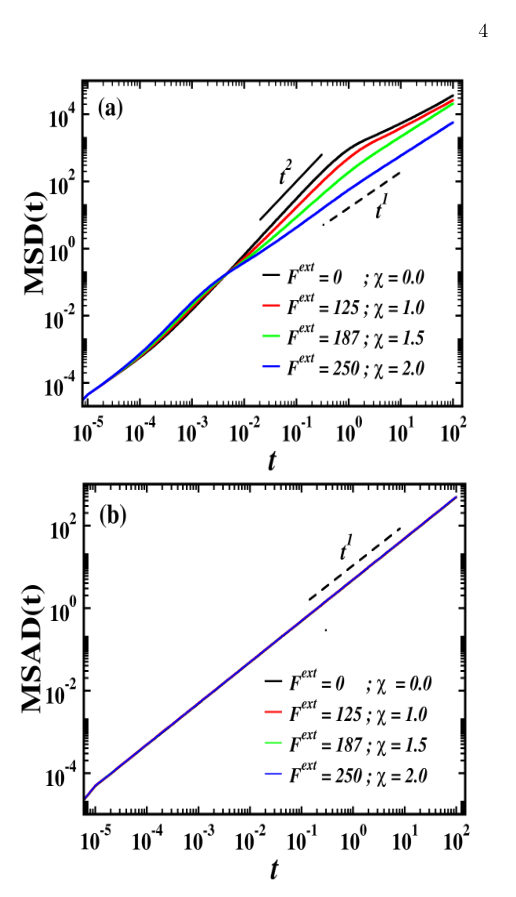
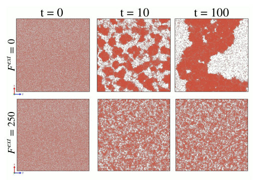

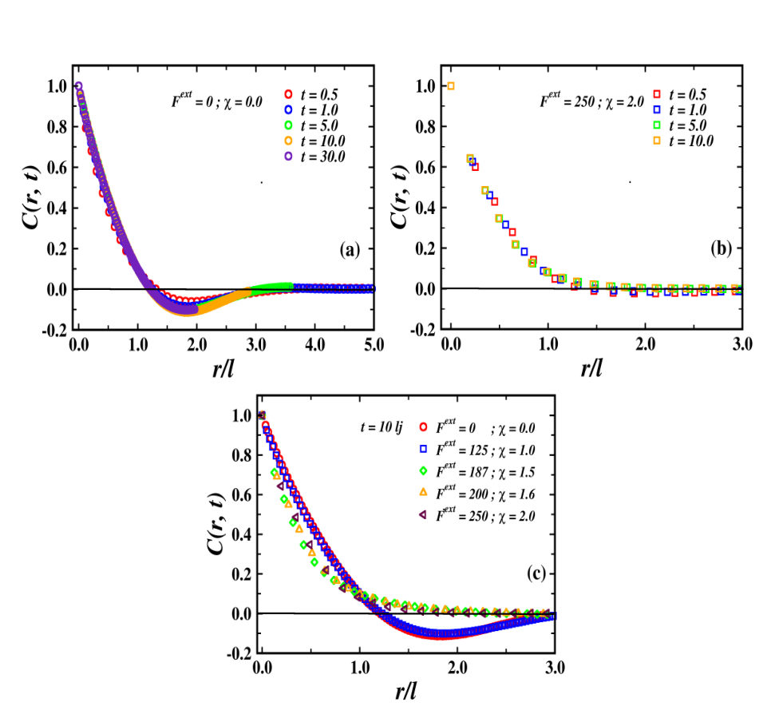
← Index · ← Previous · Next →
Authors: Kashif Ammar Yasir
Type: theory · Category: other · PDF: https://arxiv.org/pdf/2610.06223v1
Analysis basis: full PDF text, analyzed in chunks
Topic relevance: Keldysh / 2PI / non-Gaussian methods 3/5 · methods for driven-dissipative 2/5 · quantum measurements 2/5
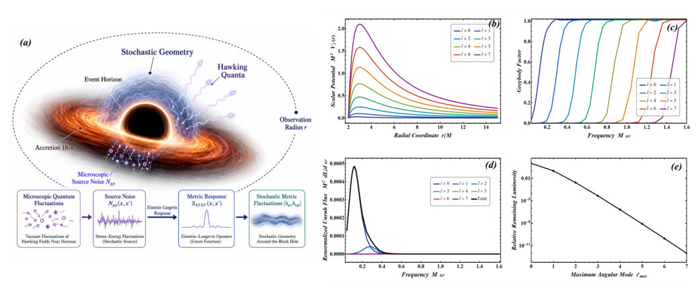
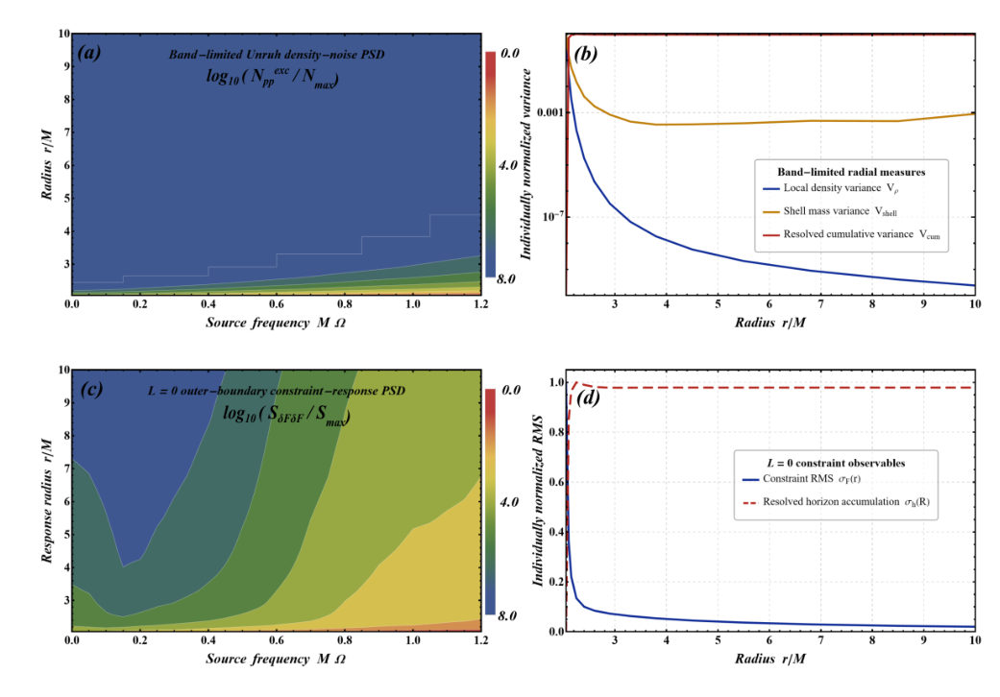
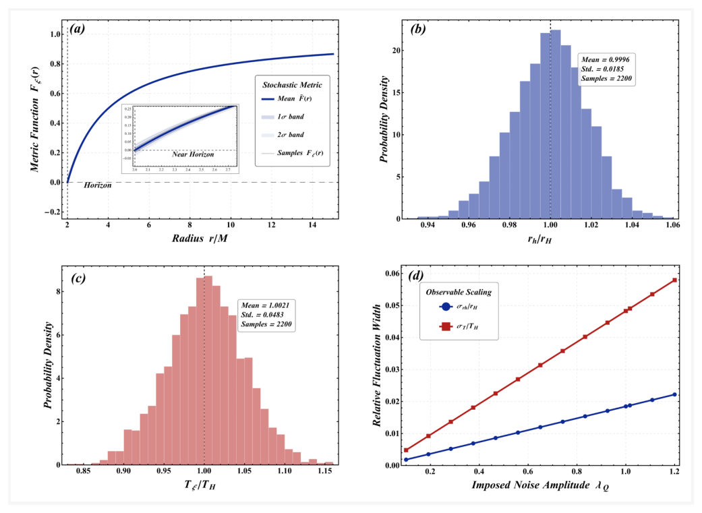
Summary. This work quantifies how quantum vacuum noise, captured by the Unruh Wightman function, perturbs the geometry of a black hole. By stochastically reconstructing the geometry using the stress covariance, the authors predict measurable fluctuations in key parameters like the horizon radius and surface-gravity temperature. This provides a finite-resolution description of quantum backreaction effects on black hole structure.
Why it may be interesting. While focused on general relativity, the methodology of using quantum field correlations (Unruh state) to constrain geometric observables via stochastic reconstruction shares conceptual links with modeling noise and fluctuations in complex quantum systems.
Main problem. The paper addresses how quantum stress fluctuations, beyond the mean Hawking flux, perturb the geometry of a black hole.
Main result. For specified noise amplitudes, the analysis predicts relative widths of 0.0185 for the local horizon radius and 0.0483 for the surface-gravity temperature parameter.
Method. The authors connect the exterior Unruh Wightman function to a finite-band stochastic reconstruction of the Schwarzschild geometry by propagating the connected stress covariance through a density-driven radial response.
Model / system. The system is a black hole described by a Schwarzschild reference geometry, with quantum noise input derived from the complete exterior Unruh Wightman function.
Key observables. Local horizon radius fluctuations ($\delta r_h$), surface-gravity temperature parameter fluctuations ($\delta T$), and the connected stress covariance.
Important parameters / regimes. Noise amplitude ($\lambda_Q$), finite-band resolution, and the Schwarzschild geometry parameters (GM/r).
Assumptions / limitations. The calculation relies on a density-driven constraint response (a closure assumption) and uses a Gaussian reconstruction model for the fluctuations.
Figures summary. Figures illustrate the field-to-geometry construction, show the source spectrum, and plot the relative widths of the reconstructed radius and temperature distributions against the noise amplitude.
Paper structure. The paper builds from identifying the need to use field correlations (Unruh function) over mean flux, details the stochastic reconstruction method using covariance propagation, and concludes with quantitative results for the observable fluctuations.
The mean Hawking flux does not determine how quantum stress fluctuations perturb a black-hole geometry. That information resides in field correlations, including vacuum contributions absent from the outgoing luminosity. Here we connect the complete exterior Unruh Wightman function to a finite-band stochastic reconstruction of Schwarzschild geometry. We retain the incoming vacuum and both outgoing frequency branches, form the connected stress covariance before angular projection, and propagate its monopole through a density-driven radial response. A shared Gaussian reconstruction then resolves how the value and derivative of the lapse control different geometric observables. For the specified covariance and noise amplitude, 2,200 realizations give relative widths of 0.0185 for the local horizon radius and 0.0483 for the surface-gravity temperature parameter, consistently across histograms and reconstruction checks. Covariance derivatives explain this unequal sensitivity. The construction separates the quantum-state input from the gravitational closure and spatial sampling assumptions, providing a reproducible finite-resolution description of how Hawking-field correlations affect horizon positions and surface-gravity statistics.
Authors: Cong Li, Qirui Cui, Maciej Dendzik, Magnus H. Berntsen, Wanyu Chen, Zhilin Li, Anna Delin, Wentao Zhang, Oscar Tjernberg
Type: both · Category: other · PDF: https://arxiv.org/pdf/2610.04958v1
Analysis basis: full PDF text, analyzed in chunks
Topic relevance: interference shaping light 3/5 · Keldysh / 2PI / non-Gaussian methods 2/5 · methods for driven-dissipative 2/5
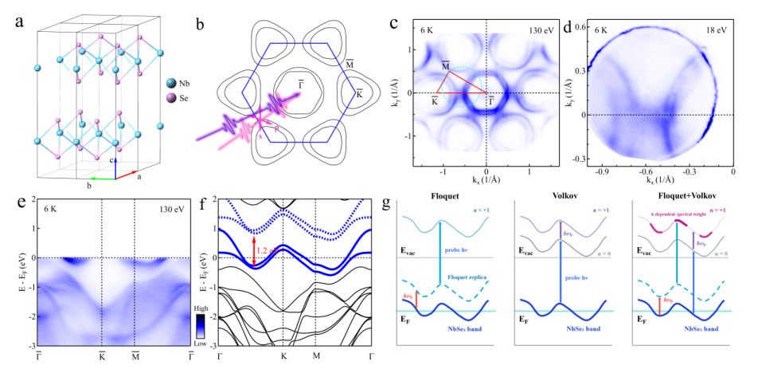
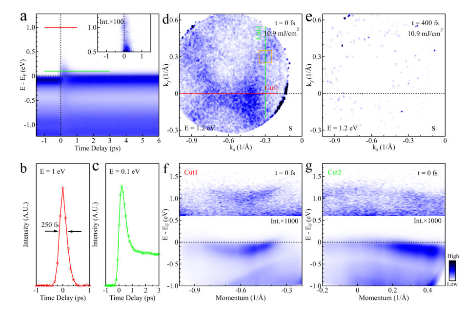
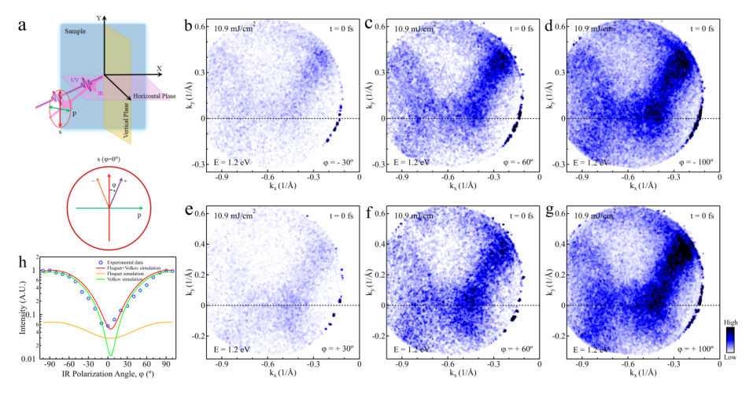
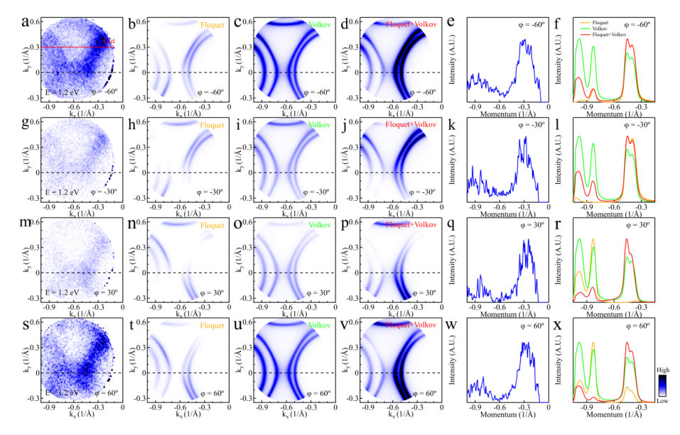
Summary. This work reports the observation of Floquet dressing in the bulk metallic bands of 2H-NbSe2 using time-resolved ARPES. By analyzing polarization-dependent sideband replicas, the authors demonstrate that the observed signal is best explained by a coherent interference model combining initial-state and final-state dressing effects. This extends the utility of Floquet engineering to bulk metallic conductors.
Why it may be interesting. The ability to observe and model coherent optical dressing in bulk metals, rather than just surface states, opens a new avenue for controlling metallic transport and collective electronic phases using light.
Main problem. The study aims to extend the control of electronic states via Floquet dressing from surface states to the itinerant bulk bands of metals.
Main result. The authors successfully identify Floquet dressing in the bulk metallic bands of 2H-NbSe2, showing that the coherent Floquet-Volkov interference model best describes the observed momentum-space weight redistribution.
Method. The research combines time- and angle-resolved photoemission spectroscopy (tr-ARPES) experiments with detailed theoretical modeling of coherent Floquet-Volkov interference.
Model / system. The physical system is 2H-NbSe2, a layered multiband metal. The theoretical framework models the dressing effect using both initial-state (Bloch) and final-state (Volkov) approximations, calculating the total intensity via coherent interference.
Key observables. Photon-shifted replicas in the unoccupied state window, polarization-dependent redistribution of replica weight, and momentum distribution curves (MDCs).
Important parameters / regimes. Pump photon energy ($\hbar\omega_{ ext{pump}} = 1.2$ eV), probe energy (18 eV), and polarization angles ($\phi$).
Assumptions / limitations. The initial-state contribution must be separated from final-state photoemission effects, and the analysis relies on comparing coherent interference against incoherent sums.
Figures summary. Figures demonstrate time-delay dependence separating field-synchronous signals, constant-energy contours showing replica structure, and MDC comparisons validating the coherent interference model over incoherent sums.
Paper structure. The paper progresses by first establishing the feasibility of the measurement using tr-ARPES, then using polarization dependence and MDC analysis to distinguish between initial-state and final-state dressing, culminating in a detailed theoretical comparison between coherent and incoherent interference models.
Floquet dressing offers a route to controlling electronic states through periodic optical driving. Its realization in solids has centred primarily on topological-insulator surface states, semiconductors and two-dimensional Dirac semimetals. Extending this control to bulk metals would enable manipulation of the itinerant states underlying metallic transport and collective order. Yet strong screening and rapid scattering have long cast doubt on its feasibility in bulk metals, while photoelectron dressing complicates its identification. Here we identify Floquet dressing of the overlapping, bulk-derived metallic bands of 2H-NbSe2 using time- and angle-resolved photoemission spectroscopy. Photon-shifted replicas in a sparse unoccupied-state window retain the parent-band dispersions and appear only during pump--probe overlap. Rotating the pump's linear polarization at fixed probe polarization redistributes replica weight between momentum-space branches. With a common parameter set, a model accounting for the optical fields inside and outside the solid captures this redistribution through coherent Floquet--Volkov interference more closely than either pathway alone or their incoherent intensity sum. These findings extend Floquet dressing to the itinerant bulk bands of a multiband metal without relying on the observation of energy gaps opened by hybridization between parent bands and their photon-dressed replicas, providing a basis for exploring how coherent optical dressing couples to metallic transport and collective electronic phases.
Authors: Ganga Singh Manchanda
Type: theory · Category: numerical methods · PDF: https://arxiv.org/pdf/2610.03989v1
Analysis basis: full PDF text, analyzed in chunks
Topic relevance: analog quantum simulation 3/5 · methods for driven-dissipative 2/5 · quantum measurements 1/5
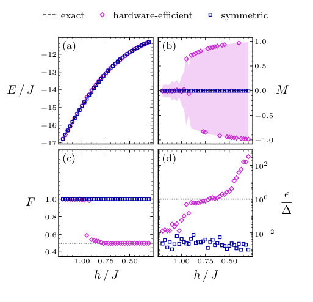
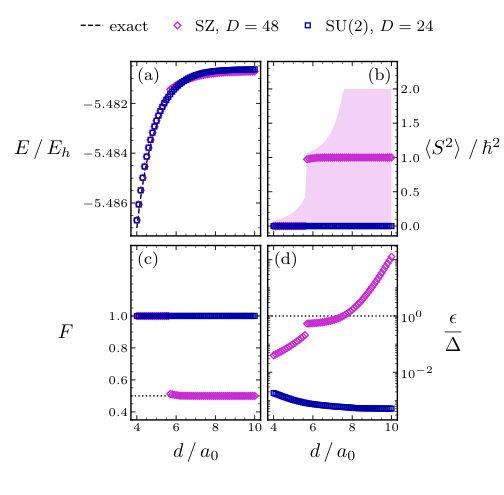
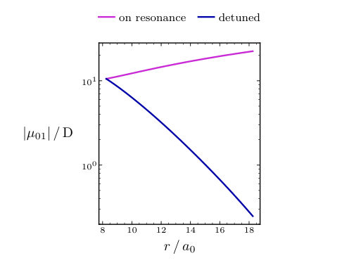
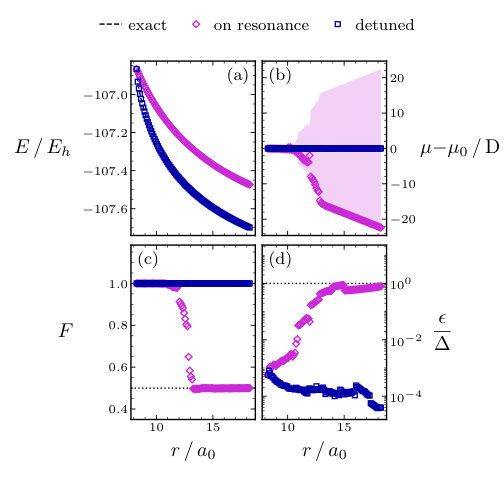
Summary. This paper develops a rigorous theory quantifying when the energy convergence achieved by variational quantum algorithms fails to guarantee the accuracy of measured observables. It derives bounds showing that the observable error can be amplified relative to the energy error, a mechanism tied to the observable's static susceptibility. The findings are validated across diverse physical models, providing essential diagnostic tools for quantum simulation practitioners.
Why it may be interesting. This work provides crucial theoretical diagnostics for practitioners using variational quantum algorithms (VQE, DMRG) on real hardware or complex models, warning them that energy convergence alone is insufficient for guaranteeing observable accuracy.
Main problem. The paper formalizes and quantifies the failure of the assumption that energy convergence implies observable convergence when using variational principles in quantum simulations.
Main result. The observable error can be significantly larger than the energy error, a phenomenon called non-linear error amplification, which is quantified by the static susceptibility of the observable.
Method. The authors derive rigorous upper and lower bounds for the 'certification radius' of observables by analyzing the state decomposition into ground and excited subspaces.
Model / system. The analysis is general but is demonstrated on specific systems including the transverse-field Ising chain (VQE), two weakly coupled hydrogen chains (DMRG), and Lithium Fluoride (KQD).
Key observables. Energy error ($\epsilon$), observable error ($\delta_O$), static susceptibility ($\chi_O$), and the expectation value of the observable $\langle O angle$.
Important parameters / regimes. The energy error $\epsilon$, the spectral gap $\Delta$, and the static susceptibility $\chi_O$ are critical parameters governing the error bounds.
Assumptions / limitations. The analysis relies on decomposing the state and bounding the resulting population and coherence terms, with specific bounds derived assuming non-zero gaps.
Figures summary. The notes detail simulations on the Ising chain, H5 chains, and LiF, showing how different ansatzes or symmetry constraints (e.g., parity-preserving vs. full) affect the observable error.
Paper structure. The paper progresses from establishing general theoretical bounds (Theorem 1 and Theorem 2) relating $\delta_O$ to $\chi_O$, and then validates these findings by applying the theory to three distinct numerical examples: VQE on Ising, DMRG on H5 chains, and KQD on LiF.
Algorithms which prepare states via the variational principle assume that closeness in energy implies closeness in state; we formalise how this assumption can fail by showing that a ground-state energy estimate converged to within $ε$ of the true value is compatible with observable expectation values in error by up to $\sqrt{2εχ_O}$ at leading order, where $χ_O$ is the static susceptibility of the observable. As a result, the observable error can be orders of magnitude larger than the energy error, a mechanism we call non-linear error amplification, and because a variational algorithm cannot guarantee the correctness of these properties from energy alone, energy does not necessarily certify an observable. In light of our findings, we examine three algorithms: the variational quantum eigensolver on the transverse-field Ising chain, the density-matrix renormalisation group on a pair of weakly coupled hydrogen chains, and Krylov quantum diagonalisation on lithium fluoride. In each case we demonstrate that a well-converged energy can leave observables uncertified.
Authors: Malvin Carl Teich, Steven B. Lowen
Type: experiment · Category: other · PDF: https://arxiv.org/pdf/2610.05667v1
Analysis basis: full PDF text, analyzed in chunks
Topic relevance: quantum optics experiment 3/5 · Full counting statistics 1/5 · interference shaping light 1/5 · quantum measurements 1/5
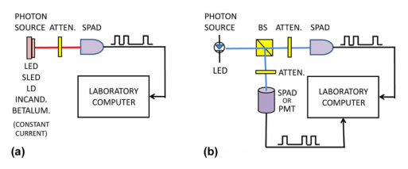
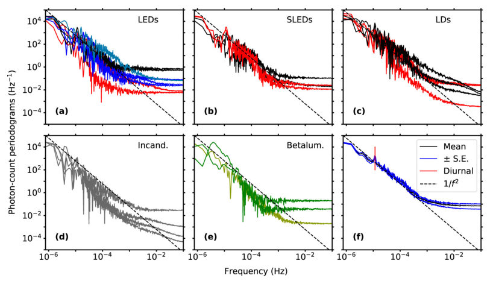
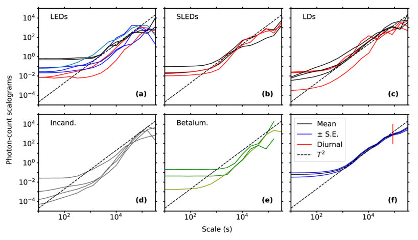
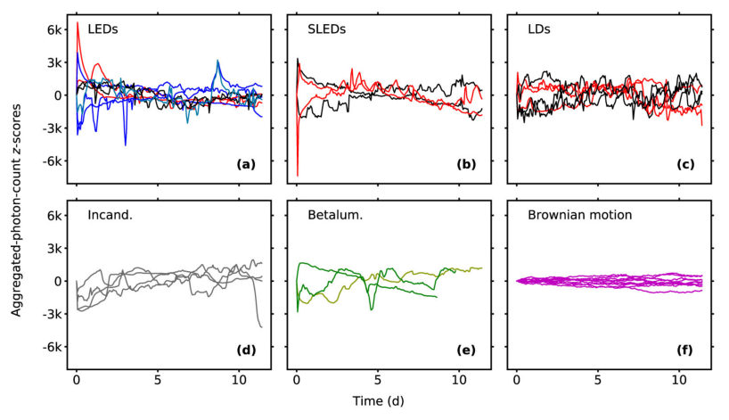
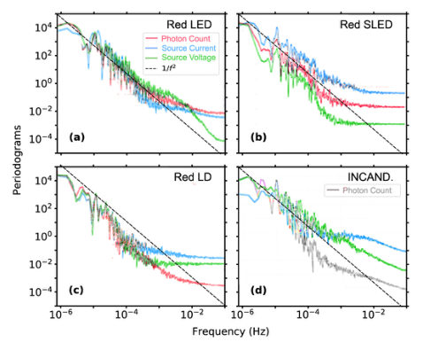
Summary. This paper reports extensive experiments showing that photon counts from various light sources exhibit a universal $1/f^2$ spectral signature at low frequencies. After ruling out instrumental and source-specific noise, the authors propose that the fluctuations follow a doubly stochastic Poisson process, suggesting a fundamental physical mechanism beyond simple classical noise sources.
Why it may be interesting. The robust, universal nature of the $1/f^2$ noise, independent of the light source physics, suggests a fundamental, non-trivial underlying physical process that could relate to complex stochastic processes in quantum optics or condensed matter noise sources.
Main problem. The paper investigates the universal origin of a $1/f^2$ spectral signature observed in photon-count fluctuations at baseband across diverse optical sources.
Main result. The observed $1/f^2$ spectrum is robust across different sources and cannot be explained by standard technical noise or source/detector fluctuations. The underlying process is statistically modeled as a doubly stochastic Poisson process.
Method. The authors performed long-term photon-counting experiments, analyzing the resulting periodograms and scalograms to characterize the low-frequency spectral density.
Model / system. The experiments utilized five classes of light sources (LEDs, SLEDs, LDs, incandescent, betaluminescent) and employed photon-counting detectors over periods up to 11.6 days. The analysis compares these measurements against theoretical models like Brownian motion and gravitational wave backgrounds.
Key observables. Photon-count spectra exhibiting a consistent $1/f^2$ form over the frequency range $1 imes 10^{-6} \le f \le 5 imes 10^{-4}$ Hz.
Important parameters / regimes. Timescale range $33$ min $\le T_f \le 11.6$ d; spectral slope of $f^{-2}$; comparison to GWB spectral slopes ($f^{-7/3}$).
Assumptions / limitations. The fluctuations are assumed to follow a doubly stochastic Poisson process with a slowly varying random intensity, and the analysis compares the results against standard models like GWB.
Figures summary. Figures display averaged periodograms and scalograms showing the characteristic $1/f^2$ or $T^2$ decay for various sources, and compare these to source current/voltage periodograms.
Paper structure. The paper establishes the empirical observation of the $1/f^2$ spectrum across multiple sources, rules out common noise sources, statistically characterizes the process, and finally compares the spectral signature to astrophysical models like the Gravitational Wave Background.
A series of 11.6-d-duration photon-counting experiments, employing a broad variety of light sources with different statistical properties and optical spectra, were carried out over a 1.5-yr period. All of the photon-count spectra at baseband followed a common $1/f^2$ form over the frequency range $1 \times 10^{-6} \leqslant f \leqslant 5 \times 10^{-4}$ Hz, corresponding to a timescale range $33$ min $ \leqslant T_f \leqslant 11.6$ d, where $T_f \equiv 1/f$. The lower and upper timescale limits were established by the photodetector noise floor and the duration of the individual experiments, respectively. Unlike ordinary Brownian motion, all of the measured photon-count sample paths exhibited irregular long-timescale fluctuations, with durations ranging from hours to days. It has been established that the photon-count spectra cannot plausibly be ascribed to fluctuations of the current, voltage, or temperature of the source or the detector, nor to technical sources of noise associated with the optical system or local environment. Although the physical origin of the photon-count fluctuations remains unresolved, several heterodox hypotheses are set forth. From a statistical point-of-view, the photon counts appear to follow a doubly stochastic Poisson process with a slowly varying random intensity. Analogous experiments that rely on ionizing radiation and direct-conversion solid-state radiation detectors are proposed.
Authors: Rohit Chaurasiya, Xuemei Gu
Type: theory · Category: quantum information and computing · PDF: https://arxiv.org/pdf/2610.06032v1
Analysis basis: full PDF text, analyzed in chunks
Topic relevance: analog quantum simulation 3/5 · methods for driven-dissipative 3/5
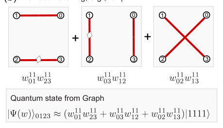
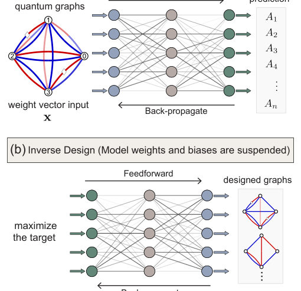
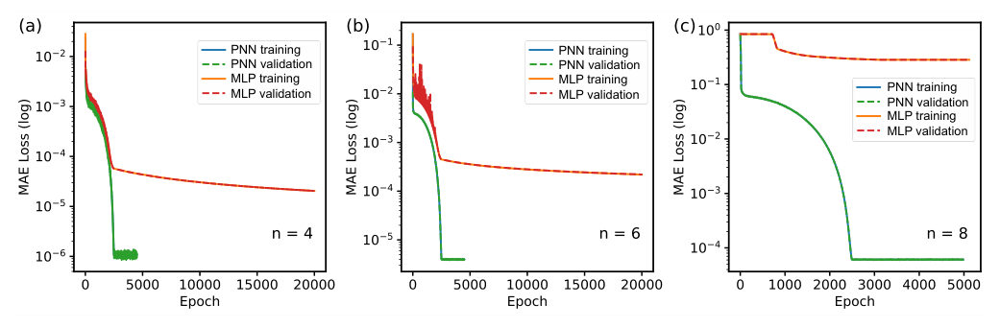
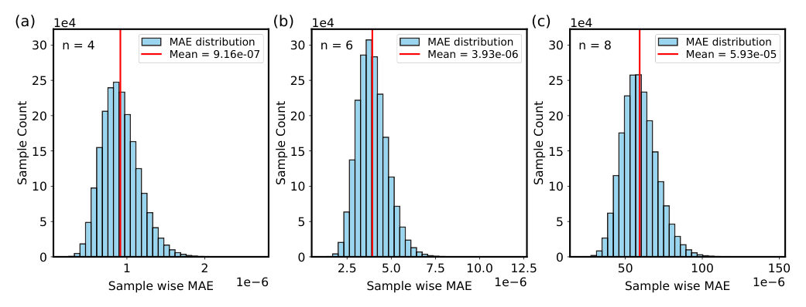
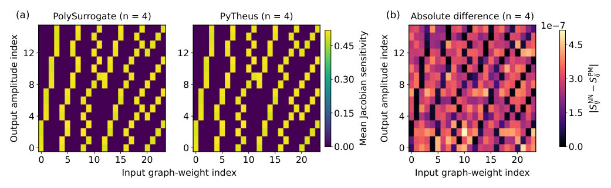
Summary. This paper introduces a Polynomial Neural Surrogate (PNN) to accelerate the prediction of quantum states in photonic quantum experiments. By embedding the known polynomial structure of the underlying physics into the neural network, the PNN outperforms standard MLPs in accuracy and efficiency. This breakthrough allows for significantly faster inverse design of complex quantum states for larger systems.
Why it may be interesting. This work directly addresses the computational bottleneck in quantum optics simulations, providing a scalable, physics-informed machine learning tool for quantum state engineering.
Main problem. The core problem is developing efficient methods to predict quantum states generated by photonic quantum experiments when the underlying simulator is computationally expensive.
Main result. A physics-inspired Polynomial Neural Surrogate (PNN) was developed that achieves higher prediction accuracy with fewer parameters than standard MLPs, enabling faster inverse design of target quantum states for larger systems.
Method. The authors train a PNN to approximate the graph-to-state amplitude mapping, and then use this surrogate model to iteratively optimize graph weights for inverse design.
Model / system. The system involves photonic quantum experiments modeled by PyTheus, which uses weighted graphs where quantum state amplitudes are calculated via sums over perfect matchings of the graph structure.
Key observables. Unnormalized output-state amplitudes, state fidelity ($F(x)$), and Jacobian sensitivities ($\mathbf{J}$).
Important parameters / regimes. System size ($n=4, 6, 8$ photons), graph weights ($\mathbf{w}$), and optimization loss parameters ($\lambda_1$).
Assumptions / limitations. The PNN structure is motivated by the known polynomial nature of the graph-to-state amplitude mapping, although it does not explicitly encode individual perfect matchings.
Figures summary. Figures illustrate the graph representation and perfect matching contributions; subsequent figures show training/validation MAE curves, fidelity distributions comparing initial vs. final states, and Jacobian sensitivity comparisons between the PNN and analytical results.
Paper structure. The paper introduces the problem, details the PNN architecture and training against an MLP baseline, demonstrates the PNN's superior accuracy and parameter efficiency, and finally applies the trained surrogate for fast inverse design of specific target states (GHZ, W, LC).
Physics simulators can support the discovery of quantum experiments by predicting the states generated by experimental configurations. When these simulators are computationally expensive, repeated simulator calls can limit the search for experiments that generate a desired quantum state. Here, we develop a physics-inspired polynomial neural surrogate for PyTheus, a graph-based quantum-optics simulator, to predict quantum states and use it to design quantum experiments. Its polynomial activations are motivated by the relation between graph perfect matchings and the resulting state amplitudes. We train separate surrogate models for four-, six-, and eight-photon systems and show that they achieve higher prediction accuracy with fewer trainable parameters than standard multilayer perceptrons. We then use the trained surrogates for inverse design of GHZ, W, and linear-cluster states. For the larger systems, the surrogates also enable faster inverse design than direct optimization with PyTheus. These results suggest that incorporating the underlying physics into neural surrogates can provide an efficient approach to quantum experiment design.
Authors: Dorian Lauwerier, Alexis Vieloszynski, Yves Bérubé-Lauzière, Victor Drouin-Touchette
Type: both · Category: other · PDF: https://arxiv.org/pdf/2610.03890v1
Analysis basis: full PDF text, analyzed in chunks
Topic relevance: QC/QI experiment 3/5 · analog quantum simulation 3/5
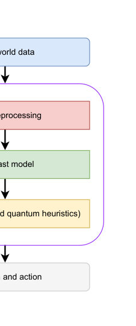
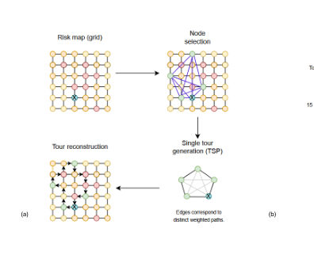
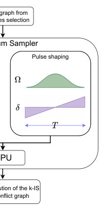
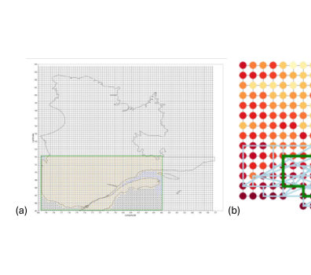
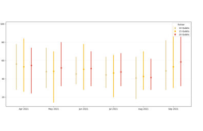
Summary. This paper proposes an innovative framework for optimizing aerial surveillance routes, such as for wildfire prevention, by combining machine learning risk forecasting with quantum annealing. The core methodology models the routing problem as finding a Maximum Independent Set on a conflict graph, which is then solved using the hardware capabilities of neutral atom quantum computers. It demonstrates a practical 'predict-then-optimize' pipeline for complex decision support systems.
Why it may be interesting. The direct application of quantum annealing to solve a graph-based combinatorial optimization problem (MIS) derived from a physical logistics scenario (drone routing) showcases a tangible use case for neutral atom quantum processors.
Main problem. The paper develops a framework to optimize aerial surveillance routing for tasks like wildfire prevention by integrating classical risk forecasting with quantum optimization.
Main result. The proposed quantum-assisted heuristic can find good solutions for the complex Team Orienteering Problem, demonstrating the potential of integrating ML forecasts with quantum annealing for real-world decision support.
Method. It uses a two-phase pipeline: first, classical ML (XGBoost) generates risk maps, and second, quantum annealing is applied to solve the resulting Maximum Independent Set (MIS) problem derived from the logistics model.
Model / system. The physical platform utilized is analog quantum computing with neutral atom computers (NAQC). The optimization problem is modeled as a Team Orienteering Problem (TOP) reduced to finding an MIS on a conflict graph, which maps naturally onto the Ising Hamiltonian of NAQC.
Key observables. The resulting full surveillance plan, which maximizes the total probability coverage of the area under surveillance.
Important parameters / regimes. The problem scale is tested up to 20 qubits; key parameters include the overlap threshold (T) and the desired number of tours (K).
Assumptions / limitations. The approach assumes that the problem can be decomposed into a classical forecasting step followed by a quantum optimization step; for current scales, classical methods are noted to be faster than available quantum hardware.
Figures summary. Figure 1 illustrates the overall framework integrating terrain prediction (ML) and quantum decision-making. Figure 2(a) shows candidate tour generation using an intermediate graph, and Figure 2(b) illustrates the conflict graph connecting overlapping tours.
Paper structure. The paper follows a pipeline structure: defining the logistics problem (TOP/ILP) $ ightarrow$ generating candidate tours (TSP approximation) $ ightarrow$ building the conflict graph $ ightarrow$ applying quantum annealing to solve MIS $ ightarrow$ reconstructing the final optimal surveillance plan.
Analog quantum computing with neutral atom computers is rapidly evolving into a promising way to perform combinatorial optimization tasks at scale. As technology matures, exploring real use cases leveraging such unique information processors becomes warranted; one example is logistics management where vehicles are assigned routes to perform a given task. Autonomous aerial vehicles (drones) are increasingly used for surveillance over a given territory. In this paper, we propose an innovative framework integrating classical machine learning forecasts and quantum annealing to find the best combination of tours for a given surveillance criterion. The risk maps produced by machine learning are used to find possible surveillance tours, while a quantum-assisted heuristic chooses the best combination, producing a full surveillance plan. By modelling our decision problem for drone paths as a Team Orienteering Problem (TOP) with additional constraints, we construct a new heuristic using quantum annealing to find good solutions. We apply this framework to wildfire prevention, where finding tours most likely to detect a starting fire has clear benefits. We study the effect of larger quantum resources on heuristic performance and compare those results to the use of classical resources.
Authors: Zhenning Liu, Emil T. Khabiboulline, Lorcan O. Conlon, Brittany McClinton, Aqil Sajjad, Saikat Guha, Jayadev Rajagopal, Alexey V. Gorshkov, Daniel Gottesman, Stephen T. Ridgway
Type: theory · Category: other · PDF: https://arxiv.org/pdf/2610.06786v1
Analysis basis: full PDF text, analyzed in chunks
Topic relevance: interference shaping light 3/5 · quantum measurements 3/5
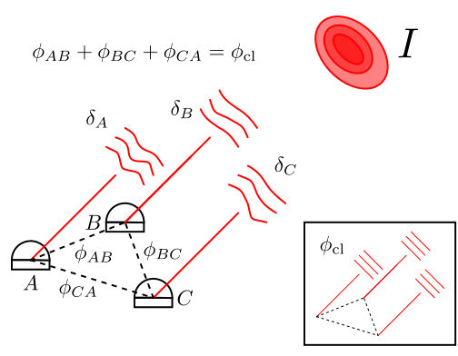
Summary. This paper develops quantum protocols to enhance ground-based interferometric imaging by accurately measuring the closure phase, which is essential for canceling atmospheric phase errors. By utilizing joint three-photon measurements, the authors prove a dramatic reduction in required photon count scaling from quadratic to nearly linear with the number of telescopes. This showcases the power of quantum information processing in advancing optical sensing technology.
Why it may be interesting. This work is highly relevant to quantum optics and quantum sensing, demonstrating how multi-photon quantum measurements can fundamentally improve the sensitivity and robustness of classical measurement techniques like interferometry.
Main problem. The paper addresses the challenge of achieving robust interferometric imaging by accurately measuring the closure phase, which is corrupted by unknown, telescope-dependent phase errors from atmospheric fluctuations.
Main result. Quantum information processing techniques, specifically using joint three-photon measurements, allow for estimating all necessary bispectra with a photon cost scaling nearly linearly ($ ilde{O}(m)$) with the array size $m$, significantly outperforming sequential single-photon protocols ($\Omega(m^2)$).
Method. The authors employ quantum estimation theory, establishing lower bounds on the required photon number by constructing 'hard pairs' of visibility matrices and analyzing the distinguishability ($\chi^2$) between them.
Model / system. The physical system is a ground-based interferometric array of $m$ telescopes measuring fringe phases. The core diagnostic is the closure phase, which is derived from the bispectrum and is immune to common phase noise sources.
Key observables. Closure phase ($\phi_{ ext{cl}}$), bispectrum ($B_{ijk}$), and the occupation number vector ($ u$).
Important parameters / regimes. Array size ($m$), target error level ($\epsilon$), and the number of photons ($N_\gamma$).
Assumptions / limitations. The analysis relies on the vacuum–single-photon approximation for readout and assumes the ability to coherently store photons in quantum memories.
Figures summary. Figure 1 illustrates the setup showing how summing pairwise relative phases yields a noise-immune closure phase. Other figures relate to the mathematical structure of the noisy quantum state and the distinguishability calculations.
Paper structure. The paper progresses by first establishing the physical necessity of the closure phase, then analyzing the minimal three-telescope case, generalizing to large arrays to derive the linear scaling advantage, and concluding with a discussion of quantum metrology bounds.
Closure phase enables imaging with ground-based interferometric arrays by canceling telescope-dependent phase errors due to atmospheric fluctuations. It can be obtained by measuring fringe phases on individual baselines forming a triangle and summing them. We show that closure phases can be measured more accurately with fewer photons by performing joint measurements on multiple photons. We first establish that at least three photons from the same atmospheric temporal phase-stability window are required for closure-phase information to survive the unknown telescope-dependent phase noise, and show that joint three-photon measurements already provide an advantage over single-photon measurements in the minimal three-telescope setting. We then turn to large arrays and consider estimating all bispectra---complex quantities whose phases are the closure phases---under a global mean-square error criterion. Although an $m$-telescope array contains $Θ(m^2)$ independent triangle bispectra, we show that physical constraints on the visibilities make the total information content grow only nearly linearly with $m$ at fixed accuracy. Exploiting this structure, we construct an efficient protocol using at most three-photon joint measurements with photon cost $\tilde{O}(m)$, whereas any sequential single-photon protocol requires $Ω(m^2)$ photons. When the number of detected photons per temporal stability window scales linearly with the array size, this allows the required exposure time to remain independent of $m$ up to logarithmic factors. We further analyze the complementary high-precision regime using multiparameter quantum metrology and find a similar advantage for collective measurements. Overall, our results show that quantum information processing techniques can substantially improve the sensitivity and robustness of optical interferometry.
Authors: Parameshwaran A, Bhaskar Sen Gupta
Type: both · Category: statistical mechanics · PDF: https://arxiv.org/pdf/2610.04373v1
Analysis basis: full PDF text, analyzed in chunks
Topic relevance: non-equilibrium universality 3/5 · Frenkel-Kontorova 1/5 · driven-dissipative phase transition 1/5



Summary. This work examines how quenched disorder—modeled as random forces or torques—affects the way active particles separate into dense and dilute phases (MIPS). The research shows that disorder fundamentally changes the coarsening kinetics, suppressing the expected power-law growth into a slower, activated, logarithmic growth. This connects active matter physics to established models of disordered magnetic systems.
Why it may be interesting. The connection drawn between active matter coarsening and the physics of pinned interfaces in disordered magnets provides a powerful analogy for understanding non-equilibrium phase ordering in complex, disordered media.
Main problem. The paper investigates how quenched random forces and torques alter the coarsening dynamics of Motility-Induced Phase Separation (MIPS) in active matter systems.
Main result. Both types of disorder destroy the standard Lifshitz-Slyozov growth, causing the coarsening to transition into an activated, logarithmically slow growth regime, linking MIPS to pinned interfaces in disordered magnets.
Method. The study combines large-scale Brownian dynamics simulations with theoretical scaling analysis, comparing the clean system dynamics to those perturbed by random fields.
Model / system. The system consists of Active Brownian Particles (ABPs) undergoing MIPS. Disorder is introduced via a quenched random force field (non-potential) or a quenched random torque field, simulating porous or patterned environments.
Key observables. Domain size growth $\ell(t)$, effective dynamic exponent $z_{ ext{eff}}$, correlation function $C(r, t)$, and structure factor $S(k, t)$.
Important parameters / regimes. Péclet number ($ ext{Pe}$), disorder strengths ($\chi$ for forces, $\zeta$ for torques), and the crossover scaling parameters ($\phi$).
Assumptions / limitations. The analysis compares the system to the random-field Ising model, and the Imry-Ma argument is used heuristically despite the lack of free energy in active systems.
Figures summary. Figures illustrate the crossover scaling for both random torques and random forces, showing the transition from power-law to logarithmic growth, and comparing the resulting kinetic parameters.
Paper structure. The paper first establishes the clean MIPS coarsening ($\ell \sim t^{1/3}$), then introduces and analyzes the effects of random forces (trapping in sinks) and random torques (chirality/lowering local Péclet number) separately, culminating in a unified description of activated, logarithmically slow growth.
Self-propelled particles that only repel one another can still separate into a dense and a dilute phase, a process known as motility-induced phase separation (MIPS). In a clean system the domains coarsen like any conserved mixture: domains grow as $\ell(t)\sim t^{1/3}$. Living and synthetic swimmers, however, move through rough, porous, or patterned surroundings. Using large-scale simulations of active Brownian particles, we ask how frozen heterogeneity changes MIPS coarsening. We introduce disorder in two ways, as a quenched random force field acting on particle positions and as a quenched random torque field acting on their orientations. Both destroy Lifshitz-Slyozov growth. A transient power law with a disorder-dependent exponent gives way to activated dynamics in which the effective dynamic exponent grows without bound and domains grow at most logarithmically. The crossover obeys the scaling form known from the random-field Ising model, and the domain morphology depends on disorder strength, so superuniversality fails. The two kinds of disorder act through different mechanisms. Random forces trap particles in the sinks of a random drift field once the drift beats self-propulsion. Random torques act as a sign-random, quenched chirality that erodes persistence and lowers the local Péclet number toward its critical value. Our results show that quenched disorder is a relevant perturbation for the kinetics of active phase separation and connect MIPS coarsening to the physics of pinned interfaces in disordered magnets.
Authors: Hidehiro Saito, Chisa Hotta
Type: theory · Category: strongly correlated electrons · PDF: https://arxiv.org/pdf/2610.05395v1
Analysis basis: full PDF text, analyzed in chunks
Topic relevance: methods for driven-dissipative 3/5 · analog quantum simulation 2/5
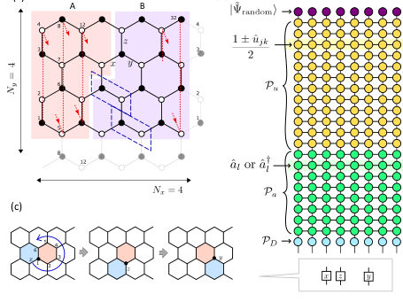
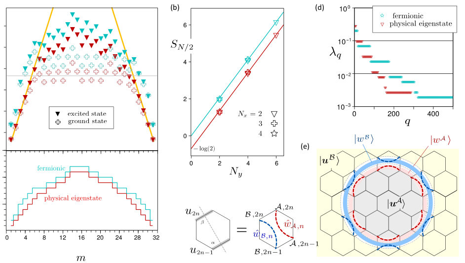
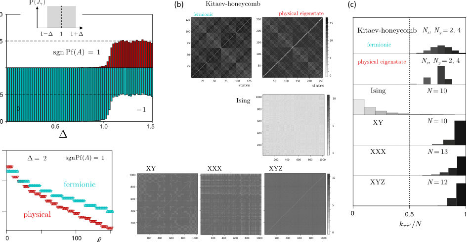
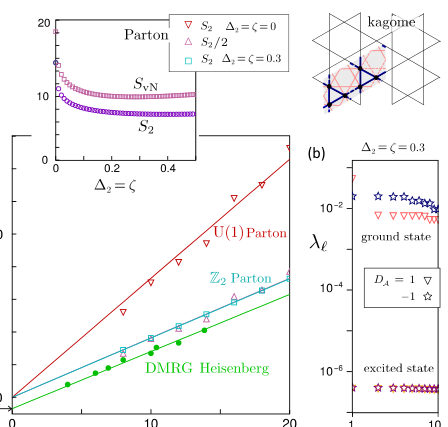
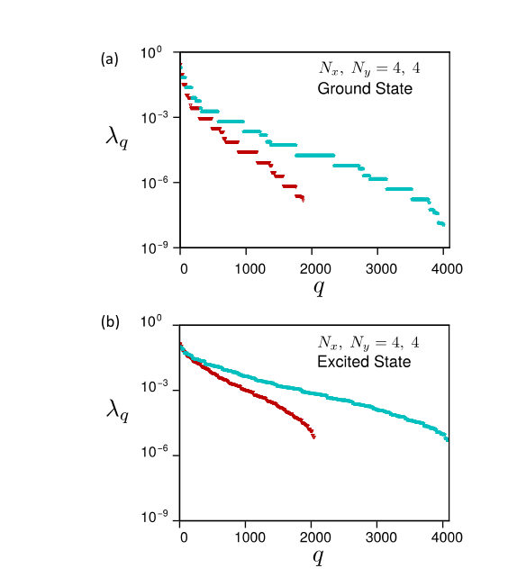
Summary. This work develops an exact Tensor Network framework to characterize the entanglement structure of the Kitaev honeycomb spin liquid. By systematically applying local projectors and the Gutzwiller projection, the authors demonstrate that topological order is robustly encoded in the entanglement spectrum, even in excited states. This provides a powerful, mathematically rigorous method for studying Z2 spin liquids in strongly correlated materials.
Why it may be interesting. The rigorous application of TNs to extract exact entanglement properties, especially the emergence of topological order only after the Gutzwiller projection, provides a powerful, non-variational tool for understanding strongly correlated quantum phases.
Main problem. To provide an exact quantum many-body description of the Kitaev honeycomb spin liquid (QSL) wavefunction, specifically addressing the difficulty of treating the full quantum state after Gutzwiller projection.
Main result. The authors establish that the topological entanglement entropy emerges only after the Gutzwiller projection, confirming that excited states in the Kitaev model are also topologically ordered.
Method. The study employs an exact two-dimensional Tensor Network (TN) description, constructing the eigenstate by sequentially applying local projectors derived from the Majorana Hamiltonian, followed by the Gutzwiller projection.
Model / system. The primary system is the Kitaev honeycomb model, a canonical platform for a Z2 spin liquid. The Hamiltonian is analyzed using both its original spin form and its equivalent quadratic Majorana fermion form.
Key observables. Topological Entanglement Entropy (EE), Schmidt spectra, and the presence of conserved Z2 quantum numbers.
Important parameters / regimes. The bond dimension used in the TN representation is kept small ($D=2$), and the analysis compares U(1) vs Z2 symmetry breaking.
Assumptions / limitations. The method assumes that the exact TN representation can be constructed via sequential projection steps, and the analysis relies on the validity of the Gutzwiller projection formalism.
Figures summary. Figures illustrate the TN construction involving MPS and MPOs for projectors, the braiding process, and comparisons of entanglement entropy ($S_\alpha$) and Schmidt values ($\lambda_\ell$) between U(1) and Z2 symmetry regimes for kagome and triangular lattices.
Paper structure. The paper progresses by first defining the model and the challenge of the full quantum state. It then details the TN construction using successive projections (Majorana and Gutzwiller) to obtain the exact eigenstate. Finally, it analyzes the resulting entanglement structure and its dependence on symmetry breaking.
While most of the features of the Kitaev honeycomb model are already clarified from the combined ${\mathbb Z}_2$ plaquette and Majorana fermion picture, we show that retrieving the exact quantum many-body form gives a clue to fix the remaining issues on its spin liquid property. We provide an exact two-dimensional tensor network description of a full set of solutions from a random product state, by sequential quantum-number projection and Gutzwiller projection, both expressed as local matrix-product operators of dimension $D=2$. The ground and excited states share the same bond dimension yet exhibit distinct Schmidt spectra, distinguishing their area-law and volume-law entanglement. We demonstrate that the topological entanglement entropy emerges {\it for all eigenstates only after} the Gutzwiller projection onto the physical spin Hilbert space, where the gauge constraint removes exactly half of the Schmidt states. This establishes that excited states are likewise topologically ordered. We further show that there exists a projection-induced collapse of the wave function into a single gauge sector in the Parton mean-field states that is known to give a good description of the spin liquids. The demonstrations on the $S=1/2$ kagome and triangular Heisenberg models suggest that the present perspective is applied to a wider class of models hosting ${\mathbb Z}_2$ spin liquids. Our finding visualizes a bulk-boundary correspondence with the Wilson-loop characterization of topological order.
Authors: Shunta Takahashi, Keisuke Fujii
Type: theory · Category: quantum information and computing · PDF: https://arxiv.org/pdf/2610.05222v1
Analysis basis: full PDF text, analyzed in chunks
Topic relevance: quantum measurements 3/5 · analog quantum simulation 2/5
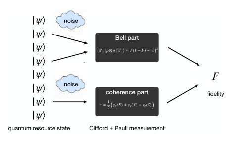
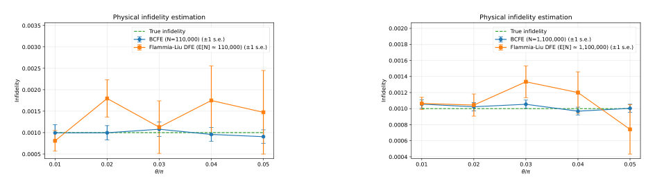
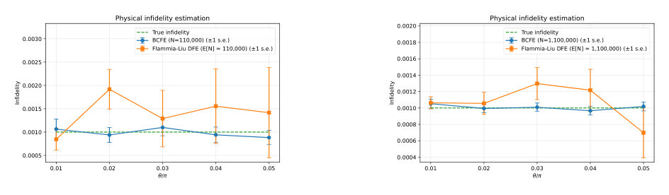
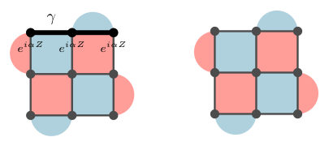
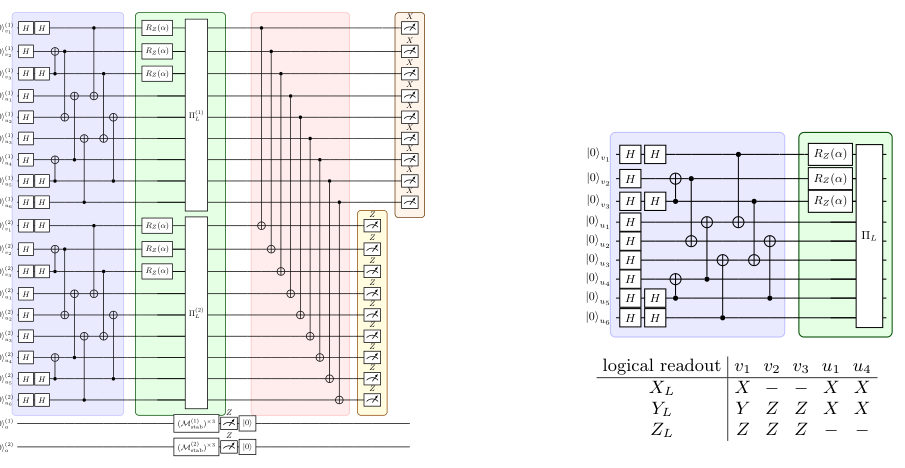
Summary. This paper introduces the Bell-Coherence Fidelity Estimation (BCFE) protocol, an efficient method to estimate the infidelity of quantum resource states using only Clifford gates and Pauli measurements. It achieves the optimal sample complexity scaling of $O(1/\epsilon)$, significantly outperforming existing methods like DFE. This advancement is vital for practical resource benchmarking in fault-tolerant quantum computing architectures.
Why it may be interesting. This work provides a crucial, resource-efficient diagnostic tool for benchmarking quantum resources in the context of fault-tolerant quantum computation, directly impacting the feasibility analysis of quantum algorithms.
Main problem. The paper addresses the fundamental challenge of efficiently estimating the fidelity ($\mathcal{F}$) of general quantum resource states ($ ho$) with respect to an ideal state $|\psi angle$, especially when the infidelity ($\epsilon = 1-\mathcal{F}$) is small.
Main result. A novel protocol, Bell-Coherence Fidelity Estimation (BCFE), achieves the optimal sample complexity scaling of $\Theta(1/\epsilon)$ using only Clifford gates and Pauli measurements.
Method. BCFE combines two parts: a 'Bell part' estimating a basis-independent quantity $b$, and a 'coherence part' estimating the target-dependent term $c$, allowing the total infidelity to be reconstructed.
Model / system. The focus is on quantum resource states, specifically applied to analog rotation resource states within the Space-Time Efficient Analog Rotations (STAR) architecture for Fault-Tolerant Quantum Computing (FTQC).
Key observables. Fidelity ($\mathcal{F}$), Infidelity ($\epsilon$), the Bell estimator $b = \langle\Psi^-| ho^{\otimes 2}|\Psi^- angle$, and the coherence term $c = \langle\psi| ho|\psi^\perp angle$.
Important parameters / regimes. The required sample complexity scales optimally as $O(1/\epsilon)$, showing significant improvement over Direct Fidelity Estimation (DFE) which scales as $O(1/\epsilon^2)$.
Assumptions / limitations. The protocol is restricted to Clifford gates and Pauli measurements, making it highly relevant for stabilizer-code based FTQC architectures.
Figures summary. Figure 1 illustrates the BCFE protocol, showing how the Bell part estimates $b = F\epsilon - |c|^2$, and the coherence part estimates $c$, which are combined to find $F$ with $O(1/\epsilon)$ complexity.
Paper structure. The paper introduces the problem, details the BCFE protocol by separating the estimation into Bell and coherence components, provides theoretical proofs establishing the optimal $O(1/\epsilon)$ scaling, and validates the method through simulations on the STAR architecture.
Fidelity estimation is a fundamental tool for assessing quantum resource states across quantum information science. For small infidelity $ε$, tomography and direct fidelity estimation (DFE) have worst-case sample complexity $O(1/ε^2)$ at fixed relative accuracy and confidence. Direct target projections achieve $O(1/ε)$ but generally require non-Clifford operations whose reliability depends on the resource states that are typically the target of benchmarking. Here, we introduce the Bell--coherence fidelity estimation (BCFE) with optimal sample complexity $Θ(1/ε)$ using only Clifford gates and Pauli measurements. We prove that BCFE is applicable to arbitrary pure targets, possibly multi-qubit, with the statistical error of the single-copy coherence part explicitly controlled. To evaluate BCFE in a practical setting, we apply BCFE to analog rotation resource states in the candidate early-FTQC architecture called the Space-Time Efficient Analog Rotations (STAR) architecture. In the simulations using surface codes, BCFE is estimated to require up to approximately $27$ times fewer resource states than DFE for the same standard error in the infidelity estimate, while its estimates remain close to reference values despite circuit-level noise in the additional Bell measurement operations. These results support efficient resource benchmarking within fault-tolerant quantum computing.
Authors: Yaocheng Chen
Type: both · Category: numerical methods · PDF: https://arxiv.org/pdf/2610.06622v1
Analysis basis: full PDF text, analyzed in chunks
Topic relevance: analog quantum simulation 3/5 · methods for driven-dissipative 2/5
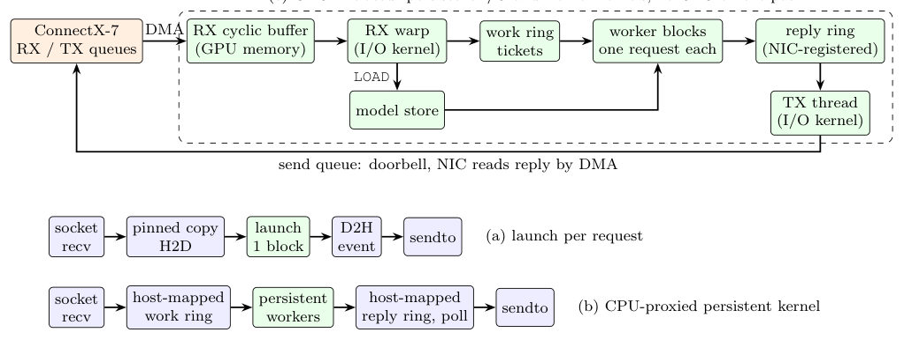
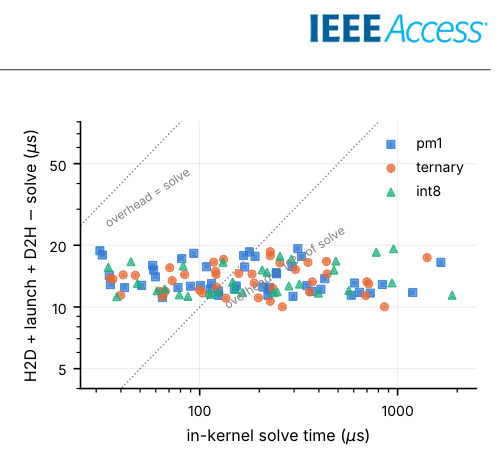
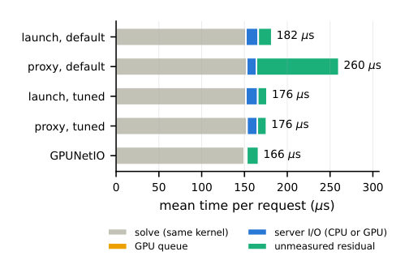
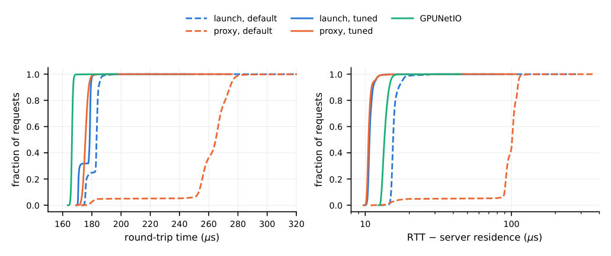
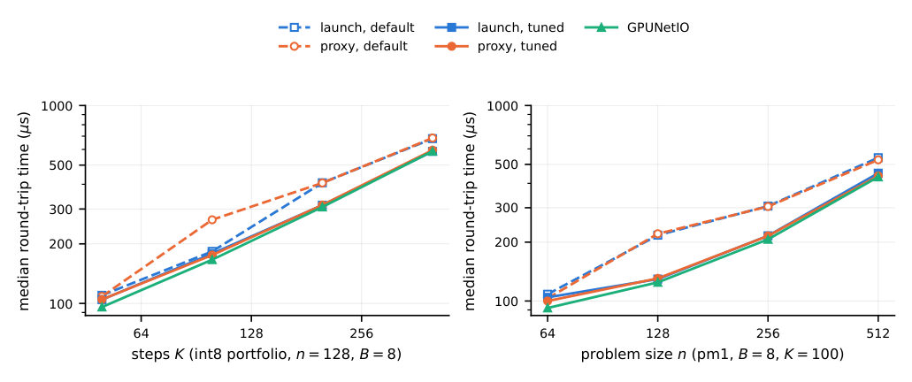
Summary. This paper presents a novel GPU-initiated architecture for solving discrete simulated bifurcation problems, designed to overcome communication bottlenecks in large-scale optimization. By keeping the entire data path—from network reception to computation and reply—on the GPU, it achieves significantly lower latency and enables the simulation of models far exceeding the device's physical memory capacity.
Why it may be interesting. The work demonstrates state-of-the-art hardware acceleration for solving complex optimization problems common in quantum physics (like finding ground states), providing crucial insights into scaling computational bottlenecks for quantum simulation.
Main problem. The paper addresses communication bottlenecks in GPU-based optimization, specifically coordinating frequent requests and handling dense models that exceed device memory.
Main result. The proposed GPU-initiated architecture significantly reduces latency under high concurrent load and enables the simulation of extremely large, dense coupling matrices by streaming coefficients.
Method. It introduces a discrete simulated bifurcation (dSB) architecture utilizing NVIDIA DOCA GPUNetIO, keeping the entire request-solve-reply data path on the GPU to bypass the CPU data path.
Model / system. The system solves Ising or QUBO formulations, characterized by an energy function $E_\ell(\mathbf{s}) = - rac{1}{2}\mathbf{s}^ op\mathbf{J}_\ell\mathbf{s} - \mathbf{h}^ op\mathbf{s}$. It supports both resident models and streaming solvers for massive coupling matrices.
Key observables. Median and 99th-percentile round-trip latencies (e.g., 189/218 $\mu$s at 800k req/s) and streaming throughput ($\approx 307$ Gb/s).
Important parameters / regimes. Load rates up to 800 thousand requests per second; model sizes up to 12.5-TB logical matrices; GPU memory capacity (64-MiB packet buffer).
Assumptions / limitations. The design assumes raw Ethernet frames are used, and the core advancement relies on keeping the entire I/O and computation pipeline on the GPU.
Figures summary. Figure 1 compares three server architectures (Launch Per Request, CPU-Proxied, GPU-Initiated), illustrating the data flow paths and highlighting the advantage of the GPU-initiated approach.
Paper structure. The paper first identifies communication bottlenecks in GPU optimization. It then details the dSB architecture, presenting two modes: a persistent service for resident models and a streaming solver for out-of-memory models. Performance is analyzed by comparing the GPU-initiated server against CPU-proxied and socket-based benchmarks.
GPU-based optimization faces two communication bottlenecks: coordinating frequent requests and delivering dense models that exceed device memory. We present a discrete simulated bifurcation (dSB) architecture that addresses both through NVIDIA DOCA GPUNetIO. For resident models, a persistent service receives field updates, executes each solve within one GPU thread block, and returns the result. Exact integer coupling sums, GPU work queues, and batched transmission keep the receive--solve--reply path on the device without a dedicated CPU data-path core. In comparisons with socket-based servers using the same solver, the largest latency gains occur under concurrent load. As the offered load increases from 400 to 800 thousand requests per second, median round-trip latency rises by only 6\%. At the highest tested load, median and 99th-percentile latencies are 189 and 218~$μ$s, compared with 288 and 609~$μ$s for the tuned persistent CPU proxy across repeated runs. For models larger than device memory, a streaming solver retains dynamical state on the GPU and reuses incoming coupling tiles across replicas. It evaluates ten-million-variable dense binary matrices at approximately 307~Gb/s, consuming a 12.5-TB logical matrix through a 64-MiB packet buffer. Ground-state recovery on planted instances and agreement with reference executions verify the computation. Together, the two modes scale dSB to concurrent requests and dense models beyond GPU memory.
Authors: Sudeshna Pal, K. B. Yogendra, Madhuparna Karmakar, Rajesh Narayanan
Type: theory · Category: strongly correlated electrons · PDF: https://arxiv.org/pdf/2610.06140v1
Analysis basis: full PDF text, analyzed in chunks
Topic relevance: analog quantum simulation 3/5 · Keldysh / 2PI / non-Gaussian methods 2/5
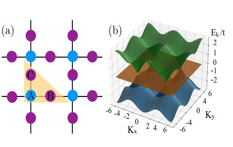
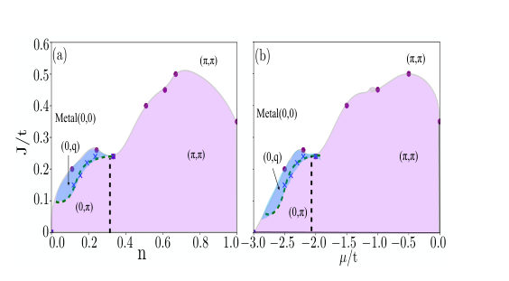
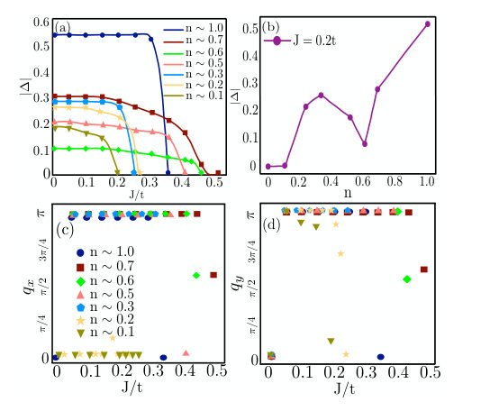
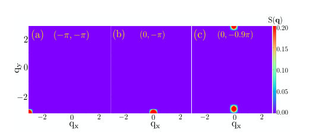
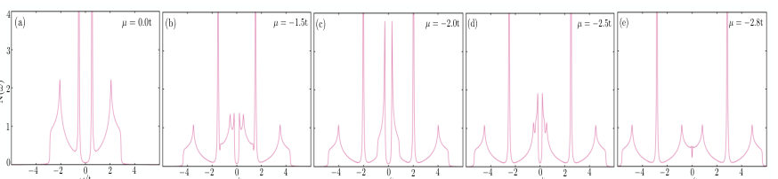
Summary. This theoretical work examines how Lifshitz transitions manifest in magnetic superconductors built on the Lieb lattice. By applying mean-field theory to the Hubbard-Kondo model, the authors map out the competition between magnetic ordering and superconductivity. They demonstrate that the system can host gapless superconducting states characterized by specific magnetic spiral orders.
Why it may be interesting. The detailed analysis of gap closing conditions and topological transitions (Lifshitz) in superconducting states is highly relevant for understanding exotic superconducting phases in engineered quantum materials.
Main problem. The paper investigates Lifshitz-type transitions and the nature of magnetic superconductivity in multi-band electronic systems.
Main result. Two inequivalent Lifshitz-type transitions are identified, and the spiral magnetic order is shown to sustain the minimum energy through zero, leading to a gapless magnetic superconductor.
Method. The study employs real-space Bogoliubov-de Gennes mean-field theory combined with analytic Green's function calculations.
Model / system. The system is modeled using the attractive Hubbard-Kondo model on the two-dimensional Lieb lattice, coupling itinerant electrons to classical core spins.
Key observables. The topology of the minimum energy contour, the superconducting order parameter phases (e.g., $(\pi, \pi) o (0, \pi) o (0, q)$), the density of states, and the spectral function.
Important parameters / regimes. Chemical potential ($\mu$), Kondo coupling strength ($J$), and the hopping parameter ($t$).
Assumptions / limitations. The analysis relies on mean-field approximations (Bogoliubov-de Gennes) and treats the superconducting pairing field as purely real and site-independent.
Figures summary. Figure 1 illustrates the Lieb lattice structure and its non-interacting band dispersion (dispersive and flat bands). Figure 2 likely maps out the phase diagram showing different superconducting ground states.
Paper structure. The paper systematically covers the Hamiltonian, the mean-field formalism, the general phase diagram, the analysis of $\mu$-driven Lifshitz transitions when Kondo coupling is zero, and finally, the analysis incorporating finite Kondo coupling.
A Lifshitz transition is a class of non-symmetry-breaking transitions typically associated with metallic systems wherein the Fermi surface changes its connectivity as the chemical potential sweeps through a band extremum or a saddle point. The phenomenology naturally adapts itself to the superconducting state, where the object that reconstructs is the manifold of minimum quasiparticle energy rather than the Fermi surface. This paper concerns Lifshitz-type transitions in multi-band superconductors. Thus, we focus on the attractive Hubbard--Kondo model on the two-dimensional Lieb lattice, with classical core spins coupled to the itinerant electrons, by laying recourse to a real-space Bogoliubov--de Gennes mean-field theory and an analytic Green's function calculation. The competition between the Kondo and pairing channels yields a magnetic superconductor throughout, with $(π,π)$ order near half filling giving way to $(0,π)$ and then, at stronger Kondo coupling, to an incommensurate spiral $(0,q)$. In such a multiband superconductor hosting a flat band, we identify two inequivalent Lifshitz-type transitions. With the core spins decoupled (the Kondo coupling set to zero), the minimum energy contour deforms with chemical potential, a hole pocket about $M$ opening into a perfectly nested square at $μ=-2t$ and reconnecting into pockets about $Γ$; this nesting fixes where $(π,π)$ order sets in. At finite Kondo coupling, for certain chemical potential, the dimension of the manifold itself drops. We obtain it analytically for each magnetic order and show that only the spiral carries the minimum energy through zero, nucleating nodes and leaving a gapless magnetic superconductor, with clear signatures in the density of states and the spectral function.
Authors: Sayan Chakraborty, Victor V. Albert
Type: theory · Category: quantum information and computing · PDF: https://arxiv.org/pdf/2610.04694v1
Analysis basis: full PDF text, analyzed in chunks
Topic relevance: analog quantum simulation 3/5 · Keldysh / 2PI / non-Gaussian methods 1/5 · quantum measurements 1/5
Summary. This paper develops a unified mathematical theory for stabilizer codes defined over complex quantum phase spaces combining qudit, oscillator, and rotor degrees of freedom. By employing tools from non-commutative geometry, the authors establish that the code dimension is determined by the lattice covolume. This framework unifies several known quantum error-correcting codes into a single, powerful mathematical structure.
Why it may be interesting. This work provides a powerful, mathematically rigorous generalization of stabilizer codes that naturally incorporates continuous (oscillator) and discrete (qudit/rotor) degrees of freedom, which is highly relevant for modeling physical quantum systems.
Main problem. Developing a unified theory for stabilizer codes whose stabilizer groups are formed by commuting qudit Paulis, oscillator displacements, and/or planar-rotor displacements.
Main result. The authors construct Generalized LCA (GLCA) codes that unify existing code types (like GKP and Pauli codes) by treating them uniformly within a framework based on generalized lattices in quantum phase space.
Method. The theory utilizes Rieffel's non-commutative geometry framework, treating the code structure via isotropic lattices in the quantum phase space and relating code properties to the covolume of the stabilizer lattice.
Model / system. The system is defined on a generalized phase space $G = M imes \hat{M}$, where $M$ is a Locally Compact Abelian (LCA) group combining components from qudits ($\mathbb{Z}_c$), oscillators ($\mathbb{R}^p$), and planar rotors ($\mathbb{Z}_q$).
Key observables. Code dimension ($K$), logical operators, code distance, and quantum weight enumerators.
Important parameters / regimes. The structure of the stabilizer lattice $D$ relative to the phase space $G$, and the damping parameter for finite-energy codewords.
Assumptions / limitations. The analysis is restricted to cases where the stabilizer group $D$ forms a lattice with a compact quotient $G/D$, ensuring a finite logical dimension.
Figures summary. Figure 1 illustrates the phase spaces for the three system types (qudit, planar rotor, oscillator) and how hybrid codes couple these types via stabilizer lattices. Table I provides a dictionary mapping code concepts to noncommutative geometry terms.
Paper structure. The paper builds from the general mathematical framework (Rieffel's module, direct integrals) to establish the code dimension via lattice theory (Pfaffians and covolume) and concludes by applying this unified theory to derive properties like logical operators and error correction measures for various hybrid code types.
We develop a theory of stabilizer codes whose stabilizer groups consist of commuting qudit Paulis, oscillator displacements, and/or planar-rotor displacements. We consider codes whose stabilizer groups form generalized lattices in quantum phase space, a condition that guarantees a finite logical dimension. We construct oscillator-rotor, rotor-qudit, and oscillator-rotor-qubit codes that cannot be decomposed into separate subsystems by generalized Clifford transformations. We also introduce an oscillator-qubit code arising from a partially lifted Golay code, where Construction A is applied to half of the Golay code coordinates. We derive analytical forms of logical operators from the symplectic dual lattice, determine Clifford-Gaussian gates from lattice symmetries, show that the code dimension equals the covolume of the stabilizer lattice, and organize the syndrome subspaces into a vector bundle. Our technique builds on earlier non-commutative geometric results by Rieffel, but it can often be interpreted simply as concatenating a given stabilizer code with a Gottesman-Kitaev-Preskill (GKP) code, applying conventional lattice-theoretic results, and unconcatenating. We formulate distances, optimal decoding, and quantum weight enumerators, recovering the Pauli, qudit, and GKP versions together with known MacWilliams identities. We construct finite-energy codewords whose encoding is an isometry up to an error exponentially small in the inverse damping parameter.
Authors: Eloïc Vallée, Ariel Kelman, Julius Mildenberger, Jordi Tura, Patrick Emonts
Type: theory · Category: numerical methods · PDF: https://arxiv.org/pdf/2610.06272v1
Analysis basis: full PDF text, analyzed in chunks
Topic relevance: analog quantum simulation 3/5 · methods for driven-dissipative 2/5
Summary. This paper presents a novel framework to rigorously bound the ground-state properties of lattice gauge theories by combining variational upper bounds with lower bounds derived from Semidefinite Programming (SDP) relaxations. By applying this to Z2 gauge theories in 1D and 2D, the authors achieve certified energy intervals with high precision, offering a powerful tool for both theoretical analysis and validating quantum simulation results.
Why it may be interesting. The rigorous bounding techniques developed using SDPs provide a powerful, mathematically certified tool to analyze complex quantum many-body systems, complementing direct simulation methods.
Main problem. The primary challenge is obtaining rigorous, two-sided bounds on the ground-state energy and extended observables for lattice gauge theories, which are computationally difficult to simulate.
Main result. The authors developed a framework that successfully yields certified, increasingly accurate intervals for the ground-state energy, demonstrated with high precision in both 1D and 2D lattice models.
Method. The method combines variational upper bounds (using tensor networks like MPS) with lower bounds derived from Semidefinite Programming (SDP) relaxations based on the NPA hierarchy.
Model / system. The study focuses on lattice gauge theories, specifically a Z2 gauge theory with dynamic fermionic matter in (1+1) dimensions and its pure-gauge counterpart in (2+1) dimensions.
Key observables. Ground-state energy ($E_{gs}$), Wilson loops, and mesonic strings.
Important parameters / regimes. The relative spread of the certified energy interval (e.g., 0.04% for 1D, 2.08% for 2D).
Assumptions / limitations. The Hamiltonian and observables are assumed to be expressible as combinations of Pauli strings, and the method relies on the convergence properties of the SDP relaxation hierarchy.
Figures summary. Figure 1 illustrates the algorithmic pipeline: upper bound via variational ansatz $ ightarrow$ lower bound via SDP relaxation $ ightarrow$ bounding observables via further SDP relaxations. It also shows the two tested systems: 1D fermionic $\mathbb{Z}_2$ and 2D pure-gauge $\mathbb{Z}_2$.
Paper structure. The paper establishes the need for bounding techniques, introduces the combined variational/SDP framework, details the application to specific lattice gauge theories, and presents the numerical results demonstrating the certified interval calculation for energy and observables.
Gauge theories describe fundamental interactions in the standard model of particle physics and build effective theories in condensed matter physics. Being notoriously hard to simulate, these theories are commonly regularized as lattice gauge theories which can be evaluated with high precision through Monte Carlo algorithms or variational methods. However, Monte Carlo algorithms are not applicable in all regimes due to the sign problem; while variational methods, quantum and classical alike, only give upper-bounds on the ground-state energy. Their precision crucially depends on the chosen ansatz. Here, we present a framework based on a hierarchy of semidefinite programs to yield increasingly good lower-bounds on the ground-state energy and propagate these bounds to extended observables like Wilson loops and mesonic strings. We demonstrate the numerical capabilities by applying the algorithm to a (1+1)-dimensional $\mathbb{Z}_2$ theory with dynamic fermionic matter and its pure-gauge version in (2+1)-dimensions. In both cases, we obtain certified intervals for the ground-state energy. For a one-dimensional system with 129 sites, the certified interval has a relative spread of $0.04\%$. For a two-dimensional system with 97 sites (corresponding to a $7 \times 8$ lattice), the relative spread is $2.08\%$. Beyond energy estimates, the proposed method provides rigorous bounds on both short- and long-range observables such as Wilson loops over multiple plaquettes and the magnitude of the mesonic string. The method can be both used as a computational microscope into many-body physics and a way to certify results of quantum simulators.
Authors: Fabio Auriemma, Mikkel Ejrnaes
Type: theory · Category: quantum information and computing · PDF: https://arxiv.org/pdf/2610.06388v1
Analysis basis: full PDF text, analyzed in chunks
Topic relevance: quantum measurements 3/5 · Full counting statistics 2/5
Summary. This theoretical paper develops a comprehensive framework to assess the performance of advanced, multi-state photon-number-resolving detectors. By deriving generalized probability response tensors, the authors show that increasing the local resolution significantly boosts measurement fidelity compared to traditional binary detectors. This provides a quantitative 'value-of-information' assessment for next-generation quantum optical detectors.
Why it may be interesting. This work provides a quantitative measure of information gain in quantum measurement devices, which is fundamental to quantum communication and quantum sensing protocols.
Main problem. The paper aims to quantify the information gain achieved by increasing the local photon-number resolution in multiplexed detection systems based on SNSPDs.
Main result. Increasing the local photon-number resolution systematically improves both detector fidelity and Bayesian photon-number reconstruction, substantially relaxing the scaling limitations of purely binary detectors.
Method. The authors develop a combinatorial and Bayesian framework, deriving a probability response tensor that accounts for finite efficiency and dark counts.
Model / system. The system involves spatially multiplexed Superconducting Nanowire Single-Photon Detectors (SNSPDs) capable of resolving multiple photon states ($s$-state detectors). The analysis models the detection process using probability tensors.
Key observables. Generalized N-photon detector fidelity, Bayesian photon-number reconstruction, and the probability response tensor $P(\mathbf{K}^{(s)}|N, D, \eta)$.
Important parameters / regimes. Local resolution ($s$), detector number ($D$), detection efficiency ($\eta$), and dark count probability ($\epsilon$).
Assumptions / limitations. The analysis includes modeling finite efficiency via binomial loss convolution and separately assessing dark counts using Poissonian statistics.
Figures summary. Figure 5 shows Poisson-averaged reconstruction analysis versus detector efficiency ($\eta$) for $D=4$ and $D=8$, demonstrating the advantage of higher-state detectors.
Paper structure. The paper progresses from developing the combinatorial framework for the probability response tensor, incorporating loss and dark counts, to applying Bayesian inference to reconstruct the source photon number and calculating the resulting detection fidelities.
We develop a combinatorial and Bayesian framework to quantify the information gained by increasing the local photon-number resolution of multiplexed detection systems based on superconducting nanowire single-photon detectors (SNSPDs). Motivated by recent studies that attribute photon-number resolving capabilities to a single SNSPD overcoming the typical on/off detection mechanism, we generalize the existing formulation for the binary devices by deriving the probability response tensor of multiplexed systems based on SNSPDs with an arbitrary number of resolvable states. We include finite efficiency through binomial loss convolution and, separately, assess the impact of dark counts. From this response tensor we derive a generalized N-photon detector fidelity, a Bayesian photon-number reconstruction, and the corresponding reconstruction fidelity. We particularize this formulation to study 2-, 3- and 4-state multiplexed systems with different numbers of detectors and show that increasing local photon-number resolution systematically improves both detector fidelity and Bayesian photon-number reconstruction. This substantially relaxes the quadratic scaling between detector number and resolvable photon-number required by purely binary multiplexed arrays. These results provide a quantitative value-of-information assessment for multi-state photon-number-resolving detector arrays.
Authors: Eric Chitambar, Yujie Zhang
Type: theory · Category: quantum information and computing · PDF: https://arxiv.org/pdf/2610.06642v1
Analysis basis: full PDF text, analyzed in chunks
Topic relevance: quantum measurements 3/5 · correlated / nonlocal dissipation 1/5
Summary. This paper rigorously characterizes quantum channels based on whether they destroy or preserve measurement incompatibility. It utilizes the mathematical theory of zonotopes and zonoids to derive necessary and sufficient conditions for these behaviors in the qubit setting. The results provide deep insights into the fundamental limitations and capabilities of quantum information processing channels.
Why it may be interesting. The geometric approach using zonoids provides a powerful, rigorous mathematical tool to characterize fundamental resource properties (like incompatibility) in quantum channels, which is highly relevant for understanding noise and quantum communication protocols.
Main problem. The paper investigates the fundamental properties of quantum channels regarding their ability to destroy or preserve the incompatibility of quantum measurements.
Main result. It establishes that for channels with matching input/output dimensions, incompatibility preservation is equivalent to the channel being unitary, and it derives necessary and sufficient conditions for a qubit channel to be incompatibility-breaking.
Method. The work employs advanced mathematical tools, specifically the geometric framework of zonotopes and zonoids, to translate the quantum compatibility problem into a problem of convex geometry.
Model / system. The study focuses on general quantum channels (CPTP maps) acting on qubits, analyzing measurement assemblages (POVMs) and their associated compatibility structures.
Key observables. Measurement incompatibility, compatibility, quantum steering correlations, and the structure of the generating zonoid measure.
Important parameters / regimes. The channel type (unital vs. nonunital), the dimension matching between input and output, and the noise threshold ($r=1/2$).
Assumptions / limitations. The analysis relies on the mathematical machinery of zonoid representation theorems and the assumption of operational equivalence between different formulations of POVMs.
Paper structure. The paper systematically defines incompatibility-breaking/preserving channels, develops the mathematical link using zonoids, derives conditions for qubit channels, and proves the unitary characterization for preservation.
A quantum channel is called incompatibility-breaking if it always destroys the incompatibility of quantum measurements. On the other extreme are incompatibility-preserving channels, which never destroy incompatibility. This work studies both types of channels through the mathematical framework of zonotopes and zonoids, an approach that provides a complete characterization of compatibility for dichotomic measurements and is particularly powerful in the qubit setting. Using the language of zonoids, we present necessary and sufficient conditions for when a qubit unital channel is incompatibility-breaking, which are also sufficient for nonunital channels. As one of our main results, we demonstrate the superactivation phenomenon of two incompatibility-breaking qubit channels that are no longer incompatibility-breaking when used in parallel. Translating this result into the task of quantum steering, it says that two copies of a two-qubit Werner state can be steered at noise threshold $1/2$, even though this is impossible using just one copy. For the problem of incompatibility preservation, we prove that a quantum channel with matching input and output dimensions will preserve general incompatibility if and only if it is a unitary transformation. When the output dimension is larger, this result no longer holds, and we offer a conjectured form of a general incompatibility-preserving channel.
Authors: Atul C. Thakur, Harender S. Dhattarwal, Richard C. Remsing
Type: theory · Category: statistical mechanics · PDF: https://arxiv.org/pdf/2610.04224v1
Analysis basis: full PDF text, analyzed in chunks
Topic relevance: Keldysh / 2PI / non-Gaussian methods 3/5 · quantum measurements 1/5
Summary. This work investigates how short-range approximations in machine-learned interatomic potentials fail to capture the true dielectric response of liquids at interfaces because they neglect long-range electrostatic effects. Using Local Molecular Field theory, the authors derive a precise integral equation for the longitudinal dielectric constant, providing a necessary theoretical correction for developing accurate, scalable simulations.
Why it may be interesting. While focused on condensed matter electrostatics, the rigorous development of fluctuation relations and the systematic correction of mean-field approximations (like those used in MLIPs) provides advanced theoretical tools applicable to open quantum systems where long-range correlations are critical.
Main problem. The paper addresses the challenge of accurately modeling the dielectric response of nonuniform liquids, particularly at interfaces, by distinguishing the roles of short-range versus long-range electrostatic interactions.
Main result. Long-range interactions are crucial for the longitudinal dielectric profile ($\epsilon_{\perp}(z)$), which short-range Machine Learned Interatomic Potentials (MLIPs) often fail to capture. The authors derive a fluctuation relation and an integral equation to correctly predict this nonuniform dielectric profile.
Method. The study employs Local Molecular Field (LMF) theory, combining linear response theory with fluctuation relations to derive an integral equation for the dielectric constant, which is then used to guide the development of corrected MLIPs.
Model / system. The system is a nonuniform liquid, such as water, confined near an interface. The theoretical framework models the total Hamiltonian by splitting the electrostatic potential into short-range ($v_0$) and long-range ($v_1$) components, allowing for comparison between full electrostatics and truncated models.
Key observables. Transverse ($\epsilon_{\parallel}(z)$) and longitudinal ($\epsilon_{\perp}(z)$) dielectric constants, polarization fluctuations, and the interfacial polarization correlation length.
Important parameters / regimes. The separation length-scale ($\sigma$) used to split the potential, and the bulk dielectric constant ($\epsilon$).
Assumptions / limitations. The primary approximations involve using LMF theory to separate short and long-range effects, and assuming that MLIPs learn a static mean field correction at the interface.
Figures summary. Figures compare the dielectric profiles ($\epsilon_{\parallel}$ and $\epsilon_{\perp}$) calculated using long-range (LR), Gaussian Truncated (GT), and MLIP models, highlighting discrepancies in the longitudinal response.
Paper structure. The paper first establishes the physical problem by comparing short-range and long-range models. It then develops the theoretical tools, including Landau theory and the derivation of a fluctuation relation, leading to a final Fredholm integral equation for the longitudinal dielectric constant within the LMF framework.
Dielectric screening of electric fields is modified by interfaces and confinement, and any accurate description of interfacial chemistry necessitates properly modeling the nonuniform dielectric tensor. However, models with short range interactions, such as local machine learned interatomic potentials (MLIPs), are increasingly used in simulations of molecular interfaces without quantitative understanding of their nonuniform dielectric response. To build this understanding, we use the framework provided by local molecular field (LMF) theory to quantify the roles of short and long range electrostatics in confined water. Short and long range models predict the same transverse dielectric profile but short range models predict qualitatively different longitudinal dielectric profiles than their long range counterparts. To understand these differences, we develop a Landau theory that shows that long range interactions stiffen polarization fluctuations by a factor of the bulk dielectric constant and reduce the interfacial polarization correlation length by an order of magnitude. LMF theory, which captures long range interactions with an averaged field, can correct the structure and dielectric response, but the standard fluctuation relation no longer holds. We derive a fluctuation relation and integral equation for LMF theory and demonstrate their accuracy for predicting longitudinal dielectric response. MLIPs that incorporate interfacial configurations in their training essentially learn a static mean field correction at the interface, such that the integral equation can be used to predict their nonuniform dielectric profile from polarization fluctuations. We also show that short range MLIPs can be combined with symmetry preserving mean field (SPMF) theory to provide a linear-scaling alternative for long range interactions and predicting nonuniform dielectric functions.
Authors: Artem Abanov, Andrey Chubukov
Type: theory · Category: strongly correlated electrons · PDF: https://arxiv.org/pdf/2610.04663v1
Analysis basis: full PDF text, analyzed in chunks
Topic relevance: Keldysh / 2PI / non-Gaussian methods 3/5 · methods for driven-dissipative 1/5
Summary. This theoretical paper investigates whether a pole in the fermionic self-energy forces a breakdown of the Luttinger theorem. By analyzing two specific models, the authors demonstrate that the Luttinger theorem remains intact, showing that the standard relations hold even when the self-energy exhibits poles, provided the system retains a residual Fermi liquid character.
Why it may be interesting. This work is highly relevant to strongly correlated electron physics as it addresses fundamental theorems (Luttinger's) in regimes where quasiparticle descriptions are challenged by complex self-energies, which is a core topic in modern condensed matter theory.
Main problem. The paper investigates whether the presence of a pole in the fermionic self-energy necessarily implies a violation of the Luttinger theorem, which links Fermi surface volume to electron density.
Main result. The Luttinger-Ward analysis shows that the theorem remains valid ($I_1 = n, I_2 = 0$) in both considered models, even when the self-energy has poles, provided a residual Fermi liquid component exists.
Method. The authors use the Luttinger-Ward analysis, calculating integrals $I_1$ and $I_2$ derived from the full Green's function, and compare results for two distinct model setups (Model I and Model II).
Model / system. The system is a fermionic model comprising two gapped bands (whose self-energy has a pole) coupled to a narrow residual quasiparticle band forming a residual Fermi liquid. Two specific models (Model I and Model II) are analyzed based on how the residue $Z$ renormalizes the bandwidth.
Key observables. Luttinger-Ward integrals ($I_1$ and $I_2$), the chemical potential ($\mu_\Delta$), and the Density of States $N(\omega)$.
Important parameters / regimes. The residue $Z$ of the pole, the bandwidth $W$, and the fermionic density $n$.
Assumptions / limitations. The analysis assumes the applicability of the Luttinger-Ward analysis and compares results across the limit $Z o 0^+$ to study continuity/discontinuity.
Figures summary. Figures illustrate the Density of States $N(\omega)$ for Model I and Model II, and plot the chemical potential $\mu_\Delta$ and the integral $I_2$ as functions of system parameters like $\Delta/W$ and $Z$.
Paper structure. The paper systematically analyzes two models (Model I and Model II) by calculating the Luttinger-Ward integrals $I_1$ and $I_2$ using the full Green's function. It compares the results for $Z>0$ versus $Z=0$, demonstrating the persistence of the Luttinger theorem in the presence of self-energy poles.
Luttinger theorem relates Fermi surface volume to electron density per spin $n$. It holds in an arbitrary Fermi liquid but is widely believed to break when a fermionic self-energy has a pole. We show that this is not necessarily the case. As an example, we consider a fermionic system consisting of two gapped bands, originating from a self-energy $Σ(ω, \mathbf{k})$ with a pole, and a narrow residual quasiparticle band crossing $ω=0$, with a small residue $Z \ll 1$ (a residual Fermi liquid). We consider Model I, in which $Z$ also renormalizes quasiparticle bandwidth $W$ to $ZW$ and Model II, in which $W$ remains unrenormalized. The Green's function for such a system $G(ω, \mathbf{k})$ contains two zeros and three poles --- one from the quasiparticle band and two from the gapped bands. Yet, we show that in Model I, the Luttinger-Ward analysis is fully applicable for any $Z >0$, and the results are exactly the same as if the gapped bands did not exist. For Model II, the Luttinger-Ward analysis recovers once $Z$ exceeds some critical value, which depends on fermionic density.
Authors: Alvan Arulandu, Sitan Chen, Ziyun Chen, Jerry Li, Eric Ma
Type: theory · Category: quantum information and computing · PDF: https://arxiv.org/pdf/2610.06810v1
Analysis basis: full PDF text, analyzed in chunks
Topic relevance: quantum measurements 3/5 · Keldysh / 2PI / non-Gaussian methods 1/5
Summary. This paper develops advanced protocols for 'agnostic tomography' of bosonic quantum states, aiming to estimate how close an unknown state is to the best possible Gaussian approximation. It achieves this by combining Gaussian measurements with non-Gaussian measurements in a two-stage optimization process. The results establish strong complexity bounds and prove the necessity of non-Gaussian measurements for achieving the highest fidelity guarantees.
Why it may be interesting. This work provides a rigorous, resource-bounded framework for characterizing non-Gaussianity in bosonic systems, which is crucial for understanding the limits of quantum state characterization using only local measurements.
Main problem. The paper addresses the agnostic tomography of pure bosonic Gaussian states, aiming to estimate the best possible fidelity to an unknown state $ ho$ using only copies of $ ho$. The goal is to find a pure Gaussian state $|\hat{\psi} angle$ whose infidelity with $ ho$ is close to the minimum achievable infidelity, $ ext{opt}$.
Main result. Efficient protocols are established for estimating this minimum infidelity, $ ext{opt}$, in both high and low fidelity regimes. The work also provides a fundamental lower bound, proving that achieving polynomial runtime in $n$ and $1/\epsilon$ is impossible unless $ ext{NP} \subseteq ext{BQP}$.
Method. The methodology involves a two-step process: first, using general Gaussian measurements and classical robust statistics to obtain a 'warm start' estimate, followed by leveraging non-Gaussian measurements and convex/non-convex optimization to refine the estimate.
Model / system. The system under study is bosonic quantum states, specifically focusing on pure Gaussian states, which are characterized by their covariance matrices and are relevant in quantum optics and continuous variable quantum information.
Key observables. Infidelity ($dIF$), minimum achievable infidelity ($ ext{opt}$), and the fidelity $F( ho, \sigma)$.
Important parameters / regimes. Number of modes ($n$), error parameter ($\epsilon$), and the energy of the closest pure Gaussian state ($E$).
Assumptions / limitations. The strong agnostic guarantees require the use of non-Gaussian measurements, which are shown to be necessary for the best results.
Paper structure. The paper develops protocols for agnostic tomography, detailing the two-step measurement paradigm (Gaussian measurements $ ightarrow$ non-Gaussian measurements) and providing theoretical bounds on complexity and impossibility results.
We study agnostic tomography of pure bosonic Gaussian states: given copies of an arbitrary $n$-mode bosonic state $ρ$, the goal is to output a pure Gaussian state whose infidelity with $ρ$ is at most $\mathrm{opt} + ε$, where $\mathrm{opt}$ is the minimum infidelity achievable by any pure Gaussian state. We give efficient protocols achieving this in both the high and low fidelity regimes. When $\mathrm{opt}$ is below some universal constant, our protocol has runtime and copy complexity which is strongly polynomial in $n, 1/ε$ and $\log \log E$, where $E$ is the energy of the closest pure Gaussian state. For arbitrary $\mathrm{opt}$, our protocol uses $(n+1)^{\mathrm{poly}(1/ε)} \mathrm{poly}\left(1+\log\log(E)\right)$ copies and runtime. As a corollary, we obtain the first truly tolerant Gaussianity testing protocol for distinguishing whether $\mathrm{opt} > c + ε$ or $\mathrm{opt} < c - ε$, for any threshold $c\in(0,1)$. We also prove $\mathrm{poly}(n,1/ε)$ runtime is impossible, unless $\mathrm{NP}\subseteq\mathrm{BQP}$. Our protocols follow a shared paradigm: first, we iteratively use general Gaussian measurements combined with techniques from classical robust statistics to obtain a good warm start estimate, then we leverage non-Gaussian measurements to refine this warm start using convex and non-convex optimization methods. Interestingly, we prove that non-Gaussian measurements are necessary to match the strong agnostic guarantees we obtain, and in fact these guarantees are provably superior to what is possible for robustly estimating classical Gaussians.
Authors: Jiawei Cai, Rex Fleur, Benedikt Tissot, Wolfgang Löffler, Tzula B. Propp
Type: theory · Category: quantum information and computing · PDF: https://arxiv.org/pdf/2610.06247v1
Analysis basis: full PDF text, analyzed in chunks
Topic relevance: interference shaping light 3/5 · quantum measurements 1/5
Summary. This work introduces Remote Graph State Preparation (RGSP), a method using a single high-dimensional photon to prepare complex graph states for blind quantum computation. RGSP bypasses the need for resource-intensive server-side entangling gates and drastically reduces qubit overhead for tasks like QFT. It establishes a resource-efficient, topology-invariant primitive for quantum cloud computing.
Why it may be interesting. The reliance on photonic qudits and phase encoding makes this highly relevant to quantum optics and quantum information processing, offering a scalable alternative to traditional qubit-by-qubit entanglement generation.
Main problem. The paper addresses the challenge of efficiently preparing arbitrary graph states remotely for Measurement-based Quantum Computation (MBQC) in a blind setting.
Main result. A new protocol, Remote Graph State Preparation (RGSP), enables the direct preparation of arbitrary graph states using a single high-dimensional photonic qudit, significantly reducing resource overhead compared to standard methods.
Method. RGSP encodes the graph connectivity and local phases into the structured phase profile of a single photon, which is then heralded to project the remote register into the target graph state.
Model / system. The system uses a single high-dimensional photonic qudit transmitted from a client to a remote server. The computation is modeled by encoding the graph structure into the quadratic phase function $\phi_x$ of the photon's structured phase profile.
Key observables. State fidelity ($F$), success probability ($P_{ ext{succ}}$), and the required number of remote qubits for specific computations (e.g., QFT).
Important parameters / regimes. Phase noise (IID and cumulative Wiener process), transmission efficiency ($\eta_t$), and the graph topology (encoded by the adjacency matrix $A_{ij}$).
Assumptions / limitations. The fidelity is limited by phase noise during transmission, and the method assumes the ability to encode all necessary connectivity into a single photon's phase profile.
Figures summary. Figures illustrate the encoding process, the performance gain of a 'highest-weight-first' reordering strategy under cumulative noise, and resource comparisons showing massive qubit reduction for QFT implementations.
Paper structure. The paper introduces RGSP, details the encoding mechanism using the phase profile, analyzes noise resilience via mode reordering, demonstrates resource savings for universal BQC (e.g., QFT), and extends the concept to Quantum Position Verification (QPV) and multi-party computation.
Measurement-based quantum computation (MBQC) relies on entangled graph states, yet existing remote state preparation (RSP) protocols prepare only separable states, requiring subsequent entangling gates on the remote server. Here, we introduce Remote Graph State Preparation (RGSP), a framework that prepares arbitrary graph states directly from a single high-dimensional photonic qudit. By encoding multiple qubits and their graph connectivity into the photon's structured phase profile, RGSP can reduce or, for small computations, completely eliminate the need for server-side entangling operations among qubits. We show that under a reasonable noise model the resulting state fidelity is independent of the graph topology. Under cumulative fiber phase drift, we demonstrate that this fidelity is significantly enhanced by a ``highest-weight-first'' mode reordering strategy. Finally, we show that RGSP enables reduced-SWAP universal blind quantum computing on arbitrary topologies, reducing qubit overhead e.g., for a six-qubit Quantum Fourier Transform from $420$ RSP qubits with a standard brickwork topology to $48$ RSP qubits. These results establish RGSP as a resource-efficient, topology-invariant primitive for quantum-secured cloud computing.
← Index · ← Previous · Next →